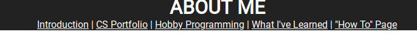
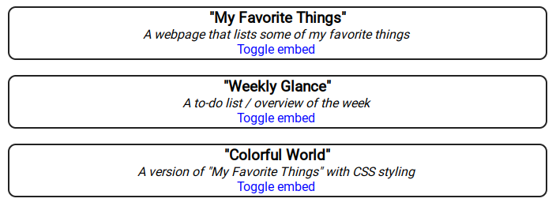

Introduction/Table Of Contents
This is a step-by-step how to page that shows how I made my "About Me" page.
Contents
Page Header
The page header is essentially the toolbar or navbar of my webpage:

It was also one of the hardest components to get working. That's mainly because there are a lot of things to get working in a small area. In summary:
- Setting the margin and padding to zero so that the header fills up the top of the page
- Making the text centered
- Making the text contrast with the background
- Making the links work correctly (see below)
The Header Links
One of the key features of the page header is the collection of links to the different sections of the page, which makes it so you don't have to scroll all the way through the page if you're just looking for a specific section. Here's how I did it:
- I gave an
idattribute to each section heading - For each header link, I used the attribute
href="#[ID]", where [ID] is theidattribute for the corresponding header.
The Portfolio Section
| Side Note: The Section Breaks The major sections are separated by a horizontal line created using the hr tag. Doing this creates clear boundaries between the different sections. |
The other complicated section of the page is the portfolio section, which uses the iframe tag to let you see all of the checkpoints on one page. It consists of:
- A table for each of the first 3 project checkpoints
- For each table, the title of its corresponding checkpoint
- For each table, a short description of the checkpoint
- For each table, a toggleable
iframetag used to embed the checkpoint
The jQuery toggle function
I used jQuery's toggle function to show and hide the iframes. Here is the code for the "Weekly Glance" embed toggle:
$("#week-toggle").on("click", function(){
$("#week-iframe").toggle(300);
});
Let's break it down:
- The
$("#week-toggle")part uses jQuery to select the toggle button, which is assigned to the idweek-toggle. - The
on("click", function(){})part activatesfunctionif the aforementioned button is clicked. - The
.toggle(300)part shows/hides the element with a duration of 300 milliseconds (0.3 seconds)
CSS
The CSS wasn't the main feature of the page, but I did put a few small styling details in it (not an exhaustive list):
- Creating a border around the links when moused over
- Setting the
border-radiusproperty on thetabletags to create those nice rounded corners
I hope you found this page useful!